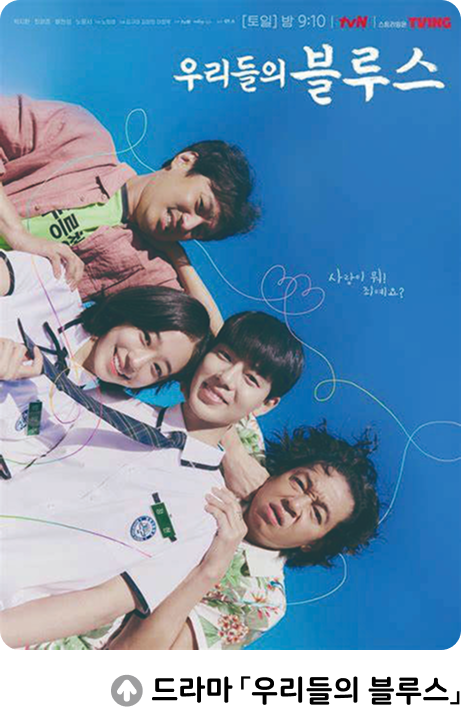

수행 활동청소년의 임신을 다루는 프로그램, 과연 적절할까
● 대중 매체에서 ‘청소년 부모 이야기를 다루는 것이 적절할까’를 주제로 가치 수직선 토론을 해 보자.
2022년 드라마 「우리들의 블루스」에서는 고교생 연인이 임신 6개월이라는 사 실을 알고 출산을 결심한다는 내용을 다루었다. 또한 다른 예능 프로그램은 일반인 고등학생의 임신, 출산, 육아 등을 다루어 화제를 불러일으켰다. 이렇게 텔레비전 프로그램에서 ‘청소년 부모’를 다루는 것이 적절한지에 대해 여러 의견이 제기되고 있다. ‘어린 나이에 임신과 출산을 하며 겪는 경제적 어려움이나 차별적인 사회의 시선 등을 이해하는 좋은 계기가 된다.’라는 의견과 ‘청소년의 성과 사랑은 신중하게 접근해야 하는 문제이며, 이러한 프로그램은 10대 청소년의 혼전 임신을 조장하고 미화할 위험이 있다.’라는 의견이 대립하고 있다.
수행 활동청소년의 임신을 다루는 프로그램, 과연 적절할까
● 대중 매체에서 ‘청소년 부모 이야기를 다루는 것이 적절할까’를 주제로 가치 수직선 토론을 해 보자.
1 ‘청소년 부모’를 다루는 프로그램 방영이 적절한지에 대한 나의 입장과 까닭을 정리하여 붙임쪽지에 써 보자.
| 나의 입장 |
적절하다. |
|---|---|
| 까닭 |
청소년 부모들이 겪는 어려움을 대신 경험함으로써 성의 온전한 가치를 실현하기 위해서는 책임있는 자세가 무엇보다도 중요하다는 점을 배울 수 있기 때문이다. |
수행 활동청소년의 임신을 다루는 프로그램, 과연 적절할까
● 대중 매체에서 ‘청소년 부모 이야기를 다루는 것이 적절할까’를 주제로 가치 수직선 토론을 해 보자.
2 한 사람씩 나와 가치 수직선에 자신의 붙임쪽지를 붙이고, 그 위치에 붙인 까닭을 발표해 보자.
위치: 매우 적절
까닭: 청소년 부모를 다루는 프로그램이 갖는 장점이 훨씬 많기 때문에 이러한 프로그램의 방영을 권장해야 한다고 생각하기 때문이다.
3 서로의 의견에 대해 자유롭게 질문하며 토론해 보자.
수행 활동청소년의 임신을 다루는 프로그램, 과연 적절할까
● 대중 매체에서 ‘청소년 부모 이야기를 다루는 것이 적절할까’를 주제로 가치 수직선 토론을 해 보자.
4 토론을 통해 생각이 바뀐 사람은 가치 수직선에서 자신의 붙임쪽지를 옮기고, 그 까닭을 설명해 보자.
위치: 적절
까닭: 어른들의 시청 지도 없이 청소년 부모를 다루는 프로그램을 무비판적으로 시청할 경우 청소년의 혼전 임신을 조장하고 미화할 위험이 있다는 반대 측의 주장이 일리가 있다고 생각했기 때문이다.
스스로 평가하기
평가 점수
-
1
해당 프로그램에 대한 자신의 입장을 논리적으로 설명하였다.
12345 -
2
다른 사람의 발표에 경청하는 태도를 보였다.
12345 -
3
자신의 입장이 바뀐 까닭에 대해 타당하고 논리적으로 설명하였다.
12345